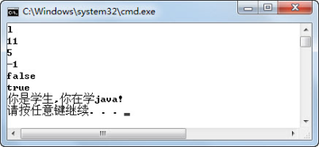
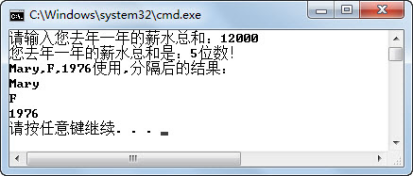

5.2 String类的常用方法
以下是String类的常用方法。
- public char charAt(int index)
从字符串中返回指定索引处的字符值。
- public int length()
返回此字符串的长度。这里需要和获取数组长度区别开，获取数组长度是通过“数组名.length”获取的。
- public int indexOf(String str)
返回指定子字符串在此字符串中第一次出现处的索引。
- public int indexOf(String str,int fromIndex)
返回指定子字符串在此字符串中第一次出现处的索引，从指定的索引开始搜索。
- public boolean equalsIgnoreCase(String another)
将此String与另一个String比较，不区分大小写。
- public String replace(char oldChar,char newChar)
返回一个新的字符串，它是通过用newChar替换此字符串中出现的所有oldChar得到的。
这里再重申一下，String类方法中的索引都是从0开始编号的。执行下面的程序，请注意程序注释，程序运行结果如图5.4所示。
public class TestArrayMethod {
public static void main(String[] args) {
String s1 = "blue bridge";
String s2 = "Blue Bridge";
System.out.println(s1.charAt(1)); //查找第2个字符，结果为l
System.out.println(s1.length()); //求s1的长度，结果为11
System.out.println(s1.indexOf("bridge")); //查找bridge字符串在s1中的位置，结果为5
System.out.println(s1.indexOf("Bridge")); //查找Bridge字符串在s1中的位置，没找到返回-1
System.out.println(s1.equals(s2)); //区分大小写比较，返回false
System.out.println(s1.equalsIgnoreCase(s2)); //不区分大小写比较，返回true
String s = "我是学生，我在学java!";
String str = s.replace('我','你'); //把"我"替换成"你"
System.out.println(str);
}
}

图5.4 String类常用方法综合实例一
- public boolean startsWith(String prefix)
判断此字符串是否以指定的前缀开始。
- public boolean endsWith(String suffix)
判断此字符串是否以指定的后缀结束。
- public String toUpperCase()
将此String中的所有字符都转换为大写。
- public String toLowerCase()
将此String中的所有字符都转换为小写。
- public String substring(int beginIndex)
返回一个从beginIndex开始到结尾的新的子字符串。
- public String substring(int beginIndex,int endIndex)
返回一个从beginIndex开始到endIndex结尾（不含endIndex所指字符）的新的子字符串。
- public String trim()
返回字符串的副本，忽略原字符串前后的空格。
下面继续通过一个案例，说明上述String类方法的使用。执行下面的程序，运行结果如图5.5所示。
public class TestStringMethod2 {
public static void main(String[] args) {
String fileName = "20140801柳海龙Resume.docx";
System.out.println(fileName.startsWith("2014")); //判断字符串是否以"2014"开头
System.out.println(fileName.endsWith("docx")); //判断字符串是否以"docx"结尾
System.out.println(fileName.endsWith("doc")); //判断字符串是否以"doc"结尾
System.out.println(fileName.toLowerCase()); //将大写变为小写
System.out.println(fileName.toUpperCase()); //将小写变为大写
System.out.println(fileName.substring(8)); //从第9个位置开始到结尾截取字符串
System.out.println(fileName.substring(8,11)); //从第9个位置开始到第11个位置结尾截取
//字符串
String fileName2 = " 20150801柳海龙Resume .docx ";
System.out.println(fileName2.trim()); //忽略原字符串前后的空格
}
}

图5.5 String类常用方法综合实例二
- public static String valueOf(基本数据类型参数)
返回基本数据类型参数的字符串表示形式，例如：
public static String valueOf(int i)
public static String valueOf(double d)
这两个方法是String类的静态方法，关于静态方法后面的课程会详细介绍，这里需要大家注意的是静态方法是通过“类名.方法名”直接调用的，例如：
String result = String.valueOf(100);//将int型100转换为字符串"100"
- public String[] split(String regex)
通过指定的分隔符分隔字符串，返回分隔后的字符串数组。
通过下面这个案例，说明上述两个方法的使用。执行下面的程序，运行结果如图5.6所示。
import java.util.Scanner;
public class TestStringMethod3{
public static void main(String[] args){
String result = String.valueOf(100);
Scanner input = new Scanner(System.in);
System.out.print("请输入您去年一年的薪水总和：");
int lastSalary = input.nextInt();
//通过String类的静态方法将lastSalary从int型转化成String字符串
String strSalary = String.valueOf(lastSalary);
System.out.println("您去年一年的薪水总和是：" + strSalary.length() + "位数！");
String date = "Mary,F,1976";
String[] splitStr = date.split(",");//用","将字符串分隔成一个新的字符串数组
System.out.println("Mary,F,1976使用,分隔后的结果：");
for(int i = 0;i < splitStr.length; i++)
{
System.out.println(splitStr[i]);
}
}
}

图5.6 String类常用方法综合实例三
在上面的例子中，用“,”将字符串“Mary,F,1976”分隔成一个新的字符串数组，这个字符串数组的长度为3，每个元素存的内容分别是“Mary”、“F”和“1976”。假设原来的字符串是“,Mary,F,1976”（第一个字符就是‘,’）、“,Mary,F,1976”（第一个字符是空格，第二个字符是‘,’），其结果又是如何呢？请大家自行练习获得结果。